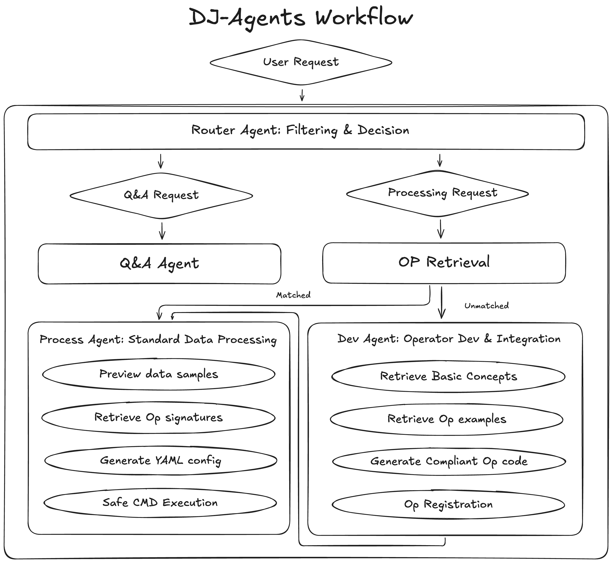

最新动态#
🚀[2026-01-15] Q&A Copilot Juicer 已部署在 Data-Juicer 官方文档网站上！欢迎向 Juicer 提出任何与 Data-Juicer 生态相关的问题。查看 📃 一键部署代码 | 🎬 更多演示 | 🎯 开发路线图。
概览#
本仓库维护了一套智能体（agents），帮助用户以自然语言的方式使用 Data-Juicer 强大的数据处理能力。
在 Data-Juicer 生态中，Data-Juicer Agents（DJ-Agents）位于「接口层」的关键位置，把用户与 Data-Juicer 强大的基础设施和工具链连接起来，助力构建数据中心化应用。
与传统的 API 或命令行交互不同，DJ-Agents 利用智能体交互、工具调用和可扩展性，让非专业用户也能通过直观的自然语言访问 Data-Juicer 的数据处理能力。
DJ-Agents 的长期目标是实现一个零开发的数据处理生命周期，让开发者更多地关注 “做什么”，而不是 “怎么做”。
当前 Data-Juicer Agents 家族包含以下成员：
Data-Juicer 问答智能体（DJ Q&A Agent）
Data-Juicer 数据处理智能体（DJ Process Agent）【内测版】
Data-Juicer 代码开发智能体（DJ Dev Agent）【内测版】
Data-Juicer Agents 采用 多智能体路由架构 来将用户请求路由到合适的智能体。详见 智能体介绍。

快速开始#
在线服务#
Q&A Copilot Juicer 已部署在 Data-Juicer 官方文档页面上！你可以在文档站直接向 Juicer 提问任何与 Data-Juicer 生态相关的问题。
更多在线智能体服务计划开发中，关注我们的路线图，欢迎加入我们！
本地部署#
请参考文档 在本地启动 DJ-Agents。
如果在使用过程中遇到任何问题，可以先查看常见问题，或前往文档页面向我们的问答 Copilot Juicer 提问。
路线图#
DJ-Agents 的长期愿景是实现一个零开发的数据处理生命周期，让开发者能够把精力集中在 “做什么” 而不是 “怎么做” 上。
为实现这一愿景，我们正在解决两个核心问题：
智能体层面：如何设计并构建在数据处理方面足够强大的智能体
服务层面：如何把这些智能体打包成即开即用、开箱即用的产品
我们会在这两个方向上持续迭代，路线图也会随着理解的加深与能力的提升而不断演进。
以下是当前的开发清单。
智能体#
Data-Juicer 问答智能体（DJ Q&A Agent）
回答来自现有或潜在用户的 Data-Juicer 相关问题。已实现
[2026-01-15]：当前版本的 DJ Q&A Agent 在我们内部评估中表现良好，可视为生产可用。
Data-Juicer 数据处理智能体（DJ Process Agent）
自动调用 Data-Juicer 工具来完成数据处理请求。开发中
[2026-01-15]：当前版本的 DJ Process Agent 处于内测阶段，我们正在积极进行基准评测和能力优化。
Data-Juicer 代码开发智能体（DJ Dev Agent）
根据用户需求自动开发新的数据处理算子（operators）。开发中
[2026-01-15]：当前版本的 DJ Dev Agent 处于内测阶段，能力评估和优化工作仍在进行中。
服务#
未来方向#
将工作流作为技能（Workflows as Skills）
Data-Juicer Hub 承载着越来越多由 Data-Juicer 社区贡献的数据处理 recipes 和工作流。随着数据处理需求扩展到新的场景——例如 RAG、具身智能（Embodied Intelligence）、以及 数据湖仓（Data Lakehouse）架构——我们计划将现有与新开发的工作流作为可复用的 技能 集成进 DJ-Agents，从而支持更广泛、更灵活的数据处理应用。
常见问题#
问：如何获取 DashScope 的 API key？
答：请访问 DashScope 官网 注册账户并申请 API key。
问：为什么算子检索会失败？
答：请检查网络连接和 API key 配置，或尝试切换为向量检索模式。
问：如何调试自定义算子？
答：请确认已正确配置 Data-Juicer 的路径，并参考代码开发智能体提供的示例代码。
问：MCP 服务连接失败怎么办？
答：请检查 MCP 服务器是否已启动，并确认配置文件中的 URL 地址是否正确。
问：报错 requests.exceptions.HTTPError: 400 Client Error: Bad Request for url: http://localhost:3000/trpc/pushMessage 怎么办？
答：智能体是通过文件引用（路径）而不是直接上传数据来处理数据的，请确认是否提交了非文本文件。
优化建议#
对于大规模数据处理，推荐使用 Data-Juicer 的分布式模式
合理设置 batch size，以平衡内存占用与处理速度
如需更高级的数据处理能力（如数据合成、Data-Model 联合开发等），请参考 Data-Juicer 文档
相关资源#
Data-Juicer 已在大量通义及阿里云内外部用户场景中落地实践，并支撑了多项研究工作；所有代码都在持续维护与增强中。
欢迎访问 GitHub，Star、Fork、提交 Issue，并加入社区交流！
项目仓库：
贡献方式：欢迎通过 Issue 和 Pull Request 来改进 Data-Juicer Agents、Data-Juicer 以及 AgentScope。如果你在使用中遇到问题或有新功能建议，欢迎随时与我们联系。
- 文档
- 快速开始
- 智能体介绍
- 高级功能
- 定制化与扩展
- Data-Juicer 问答 Copilot 示例（中文）
- 📌 核心功能
- ⚙️ 参数说明
- 🧩 使用示例（YAML 配置）
- 📚 参考资料
- 🧱 基类结构概览
- ⚙️ 关键设计特性
- 🧩 示例：自定义一个简单 Mapper
- 📚 参考资料
- 🐍 基础安装（推荐）
- 🧩 场景化安装（按需组合）
- 🛠️ 从源码安装（获取最新特性）
- 🐳 Docker 安装
- ⚙️ 特定算子依赖安装
- 📌 注意事项
- ✅ 1. 模块化安装，按需加载
- ✅ 2. 从官方菜谱库学习与复用
- ✅ 3. 合理组合算子（Operators）
- ✅ 4. 利用批处理与分布式加速
- ✅ 5. 评估与迭代
- ✅ 6. 贡献与协作
- ✅ 7. 调试与日志
- Data-Juicer Q&A Copilot
- 🔧 InteRecipe：交互式数据处理配方生成流程